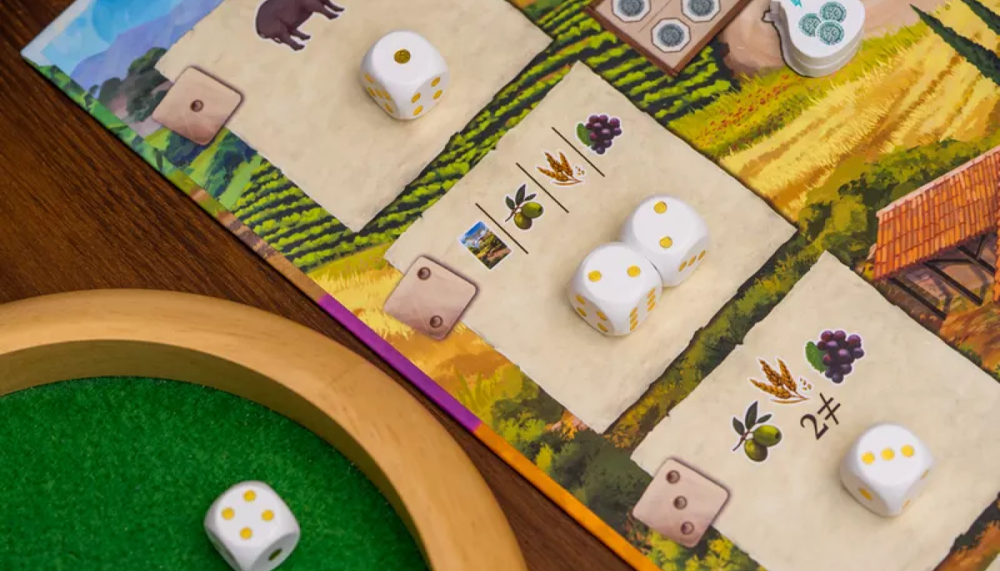

La Granja

ยูโรระดับกลาง กลไก Dice Drafting รับบทเป็นชาวไร่ขายของในตลาด แต่จากชาวไร่อาจจะกลายเป็นมาเฟียคุมตลาดแทนได้

Setup
- ผู้เล่นคนแรกนำ Maker มาไว้ตลาด แล้วคนถัดไปตามเข็มวางเลขถัดลงมา
- 2 คน: 3/2
- 3 คน: 4/3/2
- 4 คน: 5/4/3/2
- วาง Craft marker เท่ากับจำนวนผู้เล่นในแต่ละ Craft buildings
- ทอยเต๋าเพื่อวาง Marker กากบาทปิด Craft buildings 3 อันแรก (สามารถปลดล็อกได้ในขั้นตอนการเล่น)
- วางแต้ม 1 แต้มที่ Craft buildings แต่ละแห่ง และที่ Marker กากบาทแต่ละที่
- สุ่มไทล์หลังคาแต่ละเลขตามจำนวนผู้เล่นแล้ววางคว่ำไว้ ยกเว้นเลข 1 ให้หงาย
- แจกการ์ดให้คนละ 4 ใบ
- เงินคนละ 1 บาท
- แต้มคนละ 1 แต้ม
- ไทล์ม้าคนละชุด (ม้า 1 - 4)
- แต่ละคนนำ Marker 1 อันวางไว้ที่ช่องกล่องในบอร์ดผู้เล่น

Playing
เราจะเล่นกันทั้งหมด 6 รอบ โดยดูรอบได้จากไทล์หลังคา เมื่อหลังคาเลข 6 ถูกเปิดจะถือว่าเป็นรอบสุดท้าย โดยแต่ละรอบจะประกอบด้วย Phase ย่อยอีก 4 Phase ดังนี้
1. Farm Phase
2. Revenue Phase
3. Transportation Phase
4. Scoring Phase
Farm Phase
- เล่นการ์ด 1 ใบ
(ในรอบแรกจะให้เล่น 2 ใบ)- การ์ดจะสามารถใช้ได้ 4 แบบคือวาง บน ล่าง ซ้าย ขวา ซึ่งแต่ละแบบจะให้ความสามารถที่ต่างกันดังนี้
- บน (Market barrow): จะเป็น Order ถ้าทำเสร็จจะได้ผลประโยชน์ตามที่ระบุ
- ล่าง (Helper): ใช้ความสามารถการ์ด หากสัญลักษณ์ x1 คือใช้ได้ครั้งเดียวในแต่ละรอบ และบางใบจะมีบอกว่าใช้ได้ที่ Phase ไหน
- ซ้าย (Field): เมื่อถึงช่วง Harvest ช่องที่ว่างให้นำ Maker มาวางไว้ แทนการผลิตวัตถุดับ (Olive, Grain, Grapes)
- ขวา (Farm extension): เพิ่มการใช้ม้าได้ 1, ได้เงินเมื่อถึงช่วงรับ Income และถ้ามีหมู 2 ตัวจะได้หมูเพิ่ม 1 ตัวในช่วง Harvest
- จากนั้นจั่วการ์ดตามจำนวนที่บอกด้านขวา (Farm extension) เริ่มต้นจะได้ 3 ใบ
- การ์ดจะสามารถใช้ได้ 4 แบบคือวาง บน ล่าง ซ้าย ขวา ซึ่งแต่ละแบบจะให้ความสามารถที่ต่างกันดังนี้
- Income
- รับเงินตามจำนวนที่บอกด้านขวา (Farm extension) เริ่มต้นคือ 0 บาท
- Harvest
- นำ Maker มาวางไว้ที่ Field ที่ว่างอยู่
- ซื้อหลังคา
- ราคาเท่ากับจำนวนรอบ (เลขไทล์) ซื้อแล้วให้นำมาวางหงายไว้ที่หลังคาบอร์ดตัวเอง
Revenue Phase
- ทอยเต๋าตามจำนวนผู้เล่น +1
- นำเต๋าไปวางไว้ให้ตรงกับ Revenue ในบอร์ดกลาง
- ผลัดกันหยิบเต๋าทีละลูกแล้วทำรับ Revenue ตามหน้าเต๋า 2 ครั้ง
- ลูกที่เหลืออีกลูกทุกคนจะได้ทำเหมือนกัน


Transportation Phase
- เลือกไทล์ม้าแล้วคว่ำไว้ที่มุมบนซ้ายของบอร์ดตัวเอง จากนั้นหงายพร้อมกัน
- ผู้เล่นคนแรกจะขยับ Siesta track (0 - 3) จากนั้นเป็นคนอื่นตามลำดับ แล้วเรียงลำดับ Turn order ใหม่ โดยดูว่าใครอยู่บนสุด
- ส่งม้าทำงานตามจำนวนม้าที่เลือก (1 - 4)
- จ่ายเงิน 1 บาทต่อม้าที่อยู่ส่วน Farm extension ถ้าต้องการส่งของเพิ่ม
- ส่งของเข้า Market barrow
- หากส่งของครบแล้วให้ดูผลประโยชน์ด้านล่าง ถ้าเป็นเลขให้นำไปวางที่ตลาดตามเลขที่ระบะ
- หากเลขที่ตลาดเต็มสามารถเลือกดัน Maker อื่นออกไปแล้วเอาของตัวเองไปแทนได้
- ได้รับแต้มตามเลข + จำนวนร้านค้าที่ถูกเตะออก (ร้านที่เลขน้อยกว่า)
- ส่งของเข้า Craft buildings ถ้าส่งครบแล้วให้วาง Maker 1 และรับ Craft Maker แล้วทำความสามารถทันที จากนั้นผลิกมาวางไว้ที่บอร์ดตัวเองเป็นความสามารถติดตัว
- Merchant House: รับ 3 บาททันที
ได้รับ 3 บาทในช่วง Income - Wainwright: ได้ม้าเพิ่ม 1 และรับแต้ม Siesta ทันที
ได้ม้าและ Siesta เพิ่ม 1 ทุกครั้ง - Deli: รับกล่อง 1 อันทันที
กล่อง 1 อันในช่วง Income - Greengrocer: รับของอะไรก็ได้ 1 อย่าง (ผักและหมู)
รับของอะไรก็ได้ช่วง Havest - Village Store: รับ 2 แต้มทันที
2 แต้มทุกครั้งที่ส่ง Craft buildings เสร็จ - Butcher: รับแต้มตามจำนวน Market barrow ทันที (0 - 3)
ทุกครั้งที่ทำ Market barrow เสร็จได้รับอีก 1 แต้ม
- Merchant House: รับ 3 บาททันที
Scoring Phase
- ร้านที่อยู่ในตลาดร้านละ 1 แต้ม
- แต้มที่แสดงใน Siesta track
- ย้าย Siesta track ทุกคนมาล่างสุด
- เปิดหลังคาเลขถัดไป
End Game
- ขายของในคลังสินค้าให้หมด (ขายได้ทุกอย่างยกเว้นของใน Field)
- 5 บาท = 1 แต้ม
- ใครแต้มมากสุดชนะ